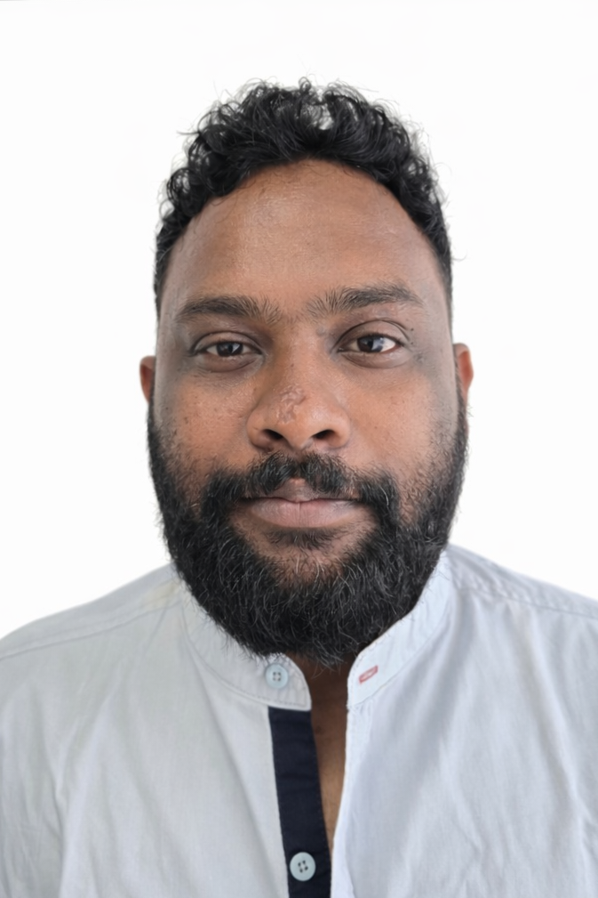

DDoS Protection
Volumetric, protocol and application-layer attacks, detection tuning and mitigation policy design.
I defend enterprise networks from attacks.
6+ years across DDoS mitigation, WAF operations, network security and incident response — protecting critical services through real-time analysis and practical mitigation.

Network & Web Application Security Engineer with 6+ years of experience operating DDoS and WAF protections across hybrid, cloud and on-prem environments.
Hands-on with NETSCOUT Arbor, Radware DefensePro and Radware WAF, BGP Flowspec, RTBH, GRE tunneling, traffic diversion, PCAP analysis and SIEM operations. Experienced in high-severity incidents, customer protection, policy tuning and RCA.
Volumetric, protocol and application-layer attacks, detection tuning and mitigation policy design.
OWASP Top 10, API protection, rate limiting, bot mitigation, credential-stuffing defense and false-positive tuning.
Rapid traffic control and resilient routing during attacks and network events.
Real-time traffic investigation, PCAP inspection, IOC extraction, alert triage and root-cause analysis.
Firewall policy, NAT, ACLs, VPNs, DNS, load balancers and hybrid/on-prem security operations.
Hybrid security controls and networking for cloud-hosted and on-prem applications.
Real-time DDoS monitoring and mitigation using Radware DefensePro and NETSCOUT Arbor; traffic analysis; BGP/GRE/ACL controls; customer onboarding; detection-policy tuning; incident reporting and RCA.
Designed DDoS mitigation strategies across hybrid and on-prem environments. Used Arbor, BGP Flowspec and RTBH for large-scale attacks exceeding 1 Tbps; performed PCAP analysis and improved detection accuracy through profile tuning.
Configured and optimized WAF policies for enterprise portals and APIs, implemented rate limiting and bot controls, investigated HTTP/slow attacks and supported application onboarding.
Monitored and triaged high-volume security alerts using Splunk, QRadar and Elastic; investigated DDoS, phishing and web incidents and supported firewall and load-balancer troubleshooting.
Interactive, simulated telemetry based on the kind of decision flow used during DDoS response. No real network traffic is generated.
Identify the attack vector and traffic profile, coordinate with network/SOC teams, apply routing-based controls, validate clean traffic and document the event.
Confirm whether the spike is legitimate → isolate source/destination patterns → determine L3/L4 versus L7 behavior → select the least disruptive mitigation → verify application health → complete RCA.
Use request patterns and WAF events to distinguish malicious automation from legitimate users while protecting application availability.
OWASP protections, rate limiting, bot detection, behavioral controls, API rules and false-positive analysis.
Improve detection quality by reviewing traffic baselines, attack signatures and alert outcomes, with reported false-positive reduction of 30%.
Better threat visibility and more reliable operational response without weakening protective controls.
CompTIA Security+ — Pursuing
ISO 27001 Awareness
Education: Mechanical Engineering · Sriprakash College of Technology · JNTUK
Open to Network Security, DDoS, WAF and Cybersecurity opportunities.